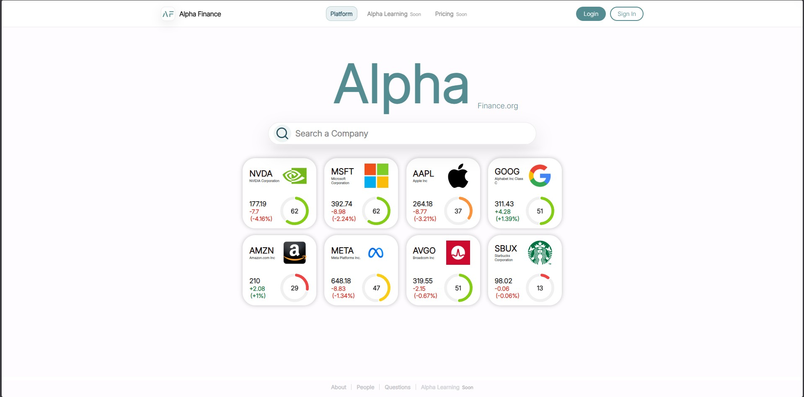
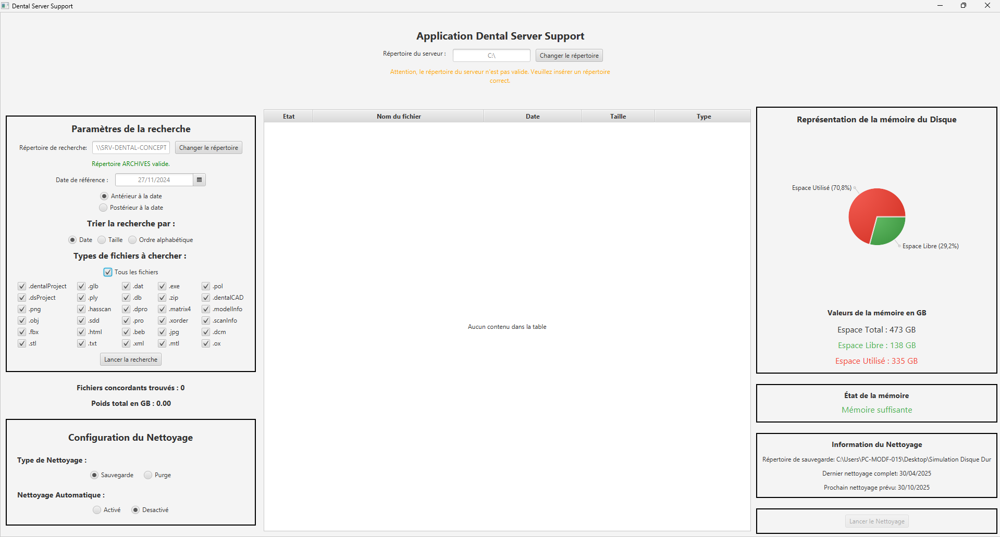
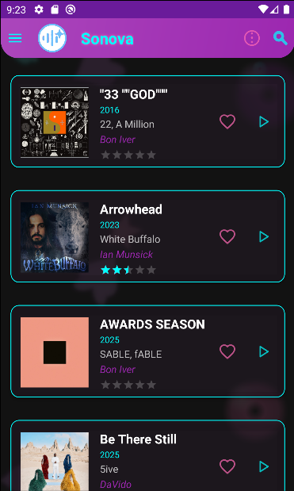
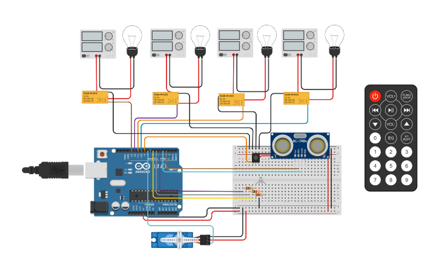
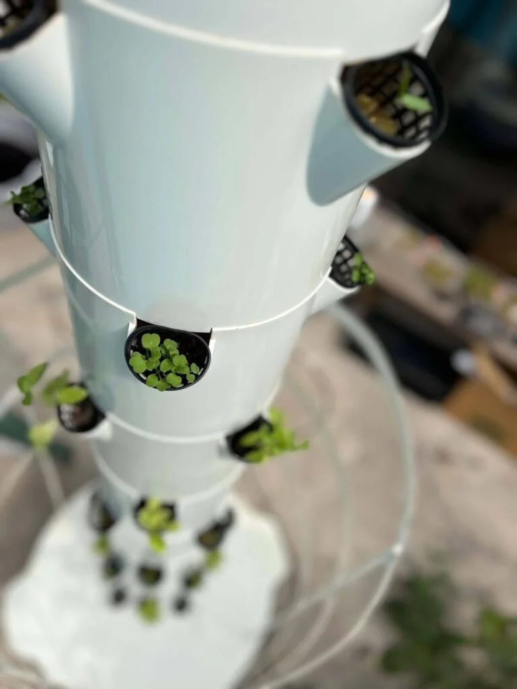
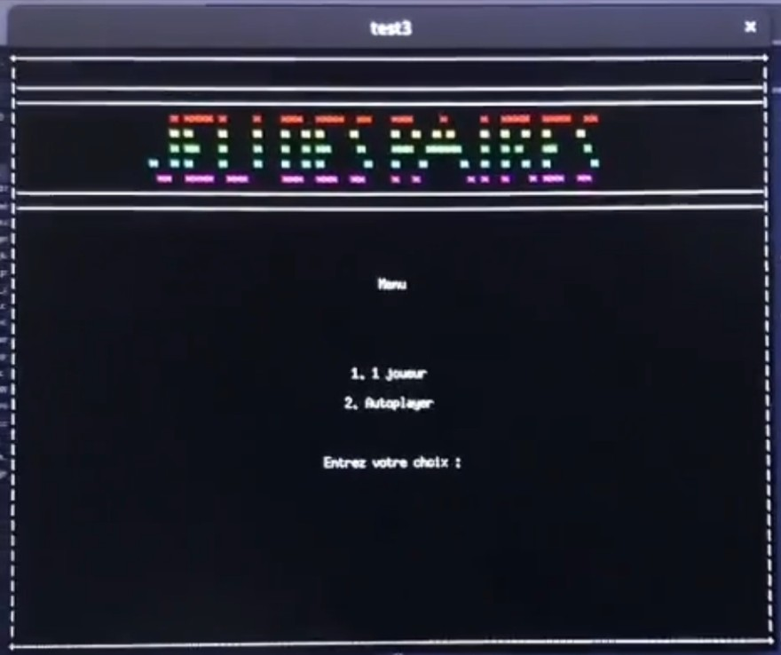

Langages de programmation
JavaScript / TypeScript90%
Java85%
HTML / CSS88%
SQL85%
Python75%
C / C++55%
Étudiant passionné d’informatique, spécialisé en développement d’applications et optimisation des systèmes. Actuellement en BUT Informatique à l’IUT Nice-Côte d’Azur.
Étudiant mexicain de 21 (08/08/2004) ans, titulaire d’un visa long séjour (VLS-TS)…


De la complejidad a la claridad, al estilo Alpha.
Alpha Finance es una aplicación web full-stack que combina un frontend estático optimizado (HTML/CSS/JS) utilizando Chart.js, Web Workers y localStorage con un backend Node.js/Express robusto. El backend actúa como un proxy seguro hacia las APIs financieras e integra un módulo de análisis impulsado por la IA de OpenAI. Técnicamente, gestiona un sistema completo de usuarios con hash bcrypt, JWT, cookies HTTP-only, verificación por correo y presencia en tiempo real vía Socket.IO. Todo está asegurado mediante Helmet y CORS, orquestado sobre una base de datos relacional MariaDB normalizada y desplegado a través de Docker y Nginx.
Dentro de este proyecto, mi rol se centró en los cimientos técnicos de la plataforma:
Alpha Finance es una plataforma diseñada para simplificar la inversión fundamental. Transformamos datos financieros complejos en información clara y accionable, permitiendo a los inversores centrarse en lo que de verdad importa.
Nuestra misión es cerrar la brecha entre las herramientas de análisis de nivel profesional y los inversores particulares. Creemos que, haciendo el análisis financiero más intuitivo, podemos ayudar a cualquiera a tomar decisiones de inversión más informadas y a largo plazo.

Aplicación web full-stack de análisis financiero...

Herramienta en Java para automatizar la gestión y limpieza de archivos…

Aplicación moderna de descubrimiento musical con diseño neón…

Automatización del hogar con Arduino y Python...

Aplicación móvil Bluetooth para el seguimiento de un sistema aeropónico...

Juego en C con modo multijugador e IA automática...
Site complet réunissant l'ensemble des exercices...

Spécialisation en développement d’applications…
Spécialités Mathématiques et Sciences de l’ingénieur…
Développement d’applications pour le laboratoire dentaire…
Conception et développement d'une plateforme full-stack...
Formation aux Premiers Secours Citoyen (PSC 1) validée...
Bénévolat au Restaurant Solidaire…
Coordination de missions de soutien…
Toujours ouvert à discuter d’opportunités…